ACS Command Center¶

Fig.1 The ACS monitor shows the state of the containers related to each DISCOS component.
Active Surface¶
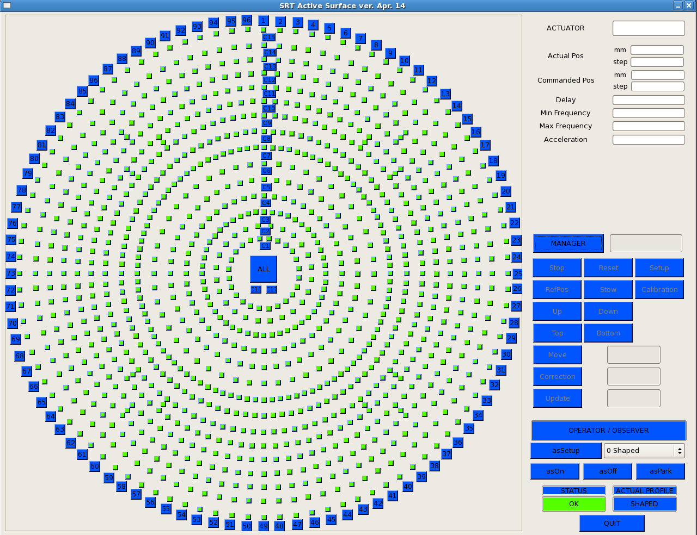Fig.2 This monitor shows the status of the actuators in a graphical representation of the Active Surface and its configuration.
Logging Display¶
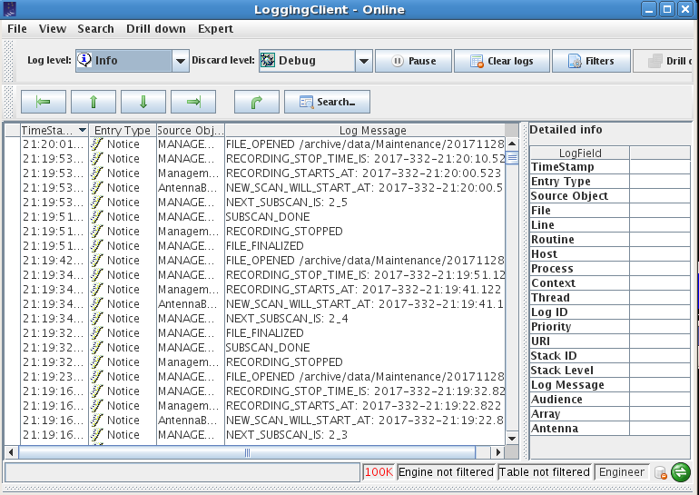Fig.3 The Logging Display shows the log messages related to the observation. New messages are shown on top of the previous ones.
Meteo Client¶
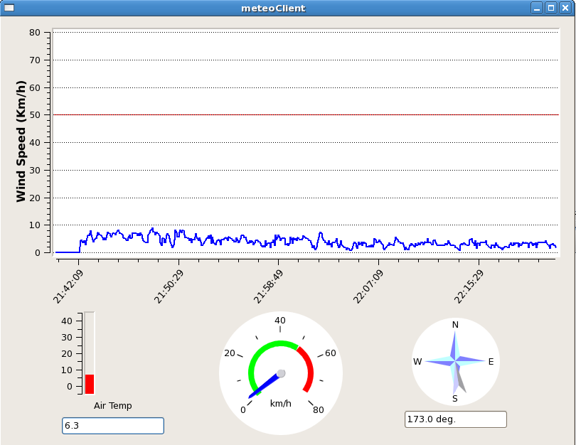The Meteo Client window shows the atmospheric temperature and the wind parameters (including wind direction) using a graphic interface.
Nuraghe-obs1¶
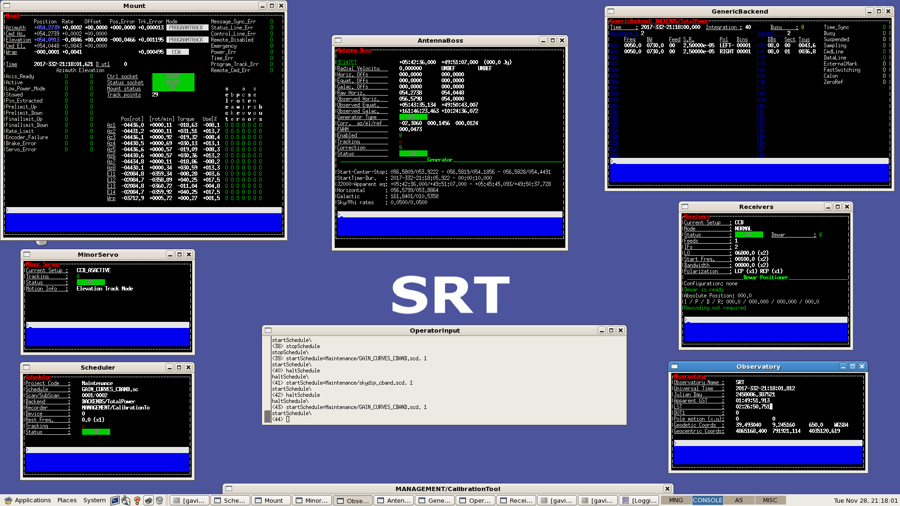Fig.5 Nuraghe-obs1 is the destination for your schedules, and is the machine where you run the system and where you should find the input terminal and all the monitors.
OperatorInput¶
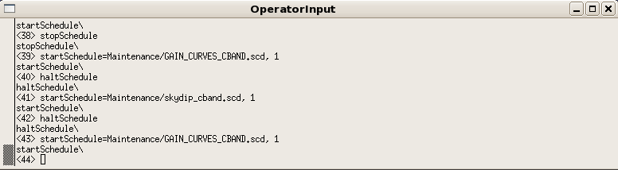Fig.6 In the input console the users can write Nuraghe commands. The prompt is just a sequential number enclosed in <>. If a command is properly read, the system replies repeating the command itself, followed by the operation results (if they are foreseen).
AntennaBoss¶
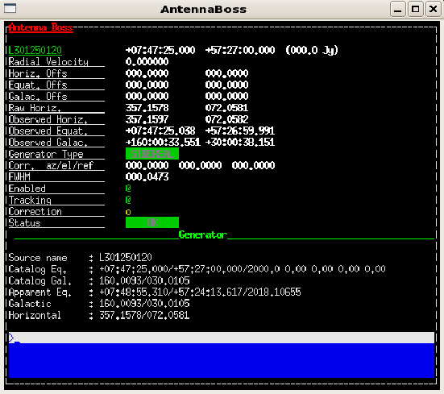Fig.7 The AntennaBoss monitor shows the target info, indicating the commanded and actual positions pointed by the antenna. It also gives a feedback on the pointing accuracy and on the overall antenna status.
GenericBackend¶
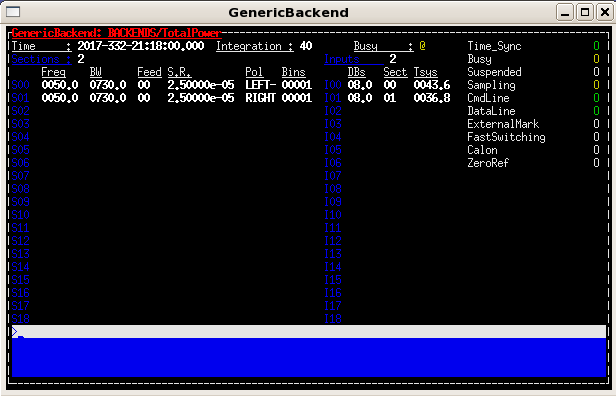Fig.8 The monitor GenericBackend shows the backend setup parameters related to each section.
Mount¶
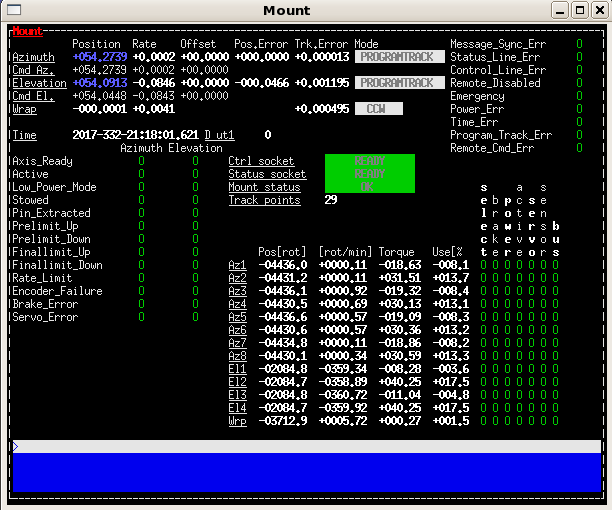Fig.9 Observers must focus only on the Mount status and on the online readouts for the Azimuth and Elevation axes, compared to the commanded positions, located in the top left section.
Observatory¶
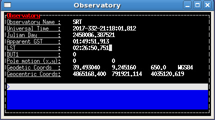Fig.10 The Observatory monitor shows the station coordinates and times.
ReceiversBoss¶
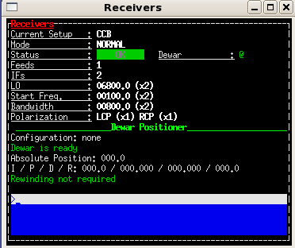Fig.11 The ReceiverBoss monitor summarizes the frontend setup parameters. The bottom part is devoted to the derotator (dewar positioner), when available.
Scheduler¶
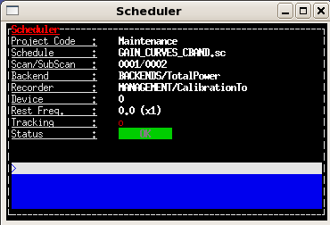Fig.12 The Scheduler monitor shows details on the selected data acquisition devices and on the running schedule, if any.
MinorServo¶
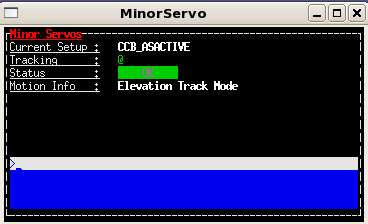Fig.13 The MinorServo monitor shows the current setup code and the minor servo status and movement.
Calibration tool client¶
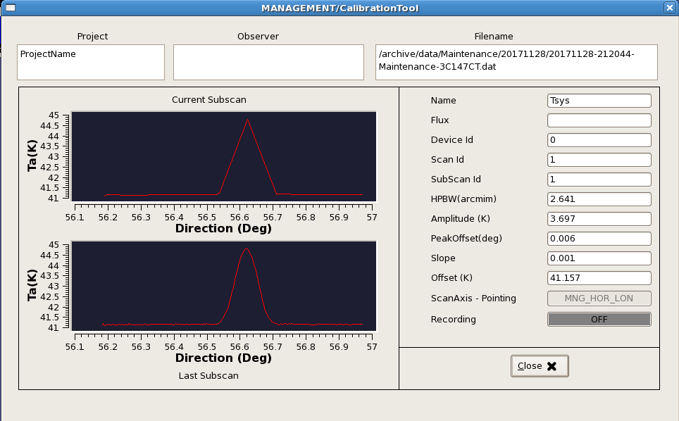Fig.14 In the Calibration tool client window the subscan currently being acquired is shown in real-time (upper plot), even if in a low-resoltution. In the lower plot, the last completed subscan - in its full sampling - is shown. We can read the information about the pointing of focus offsets (peakoffsets), the beam size (HPBW), etc.
GenericBackendX¶
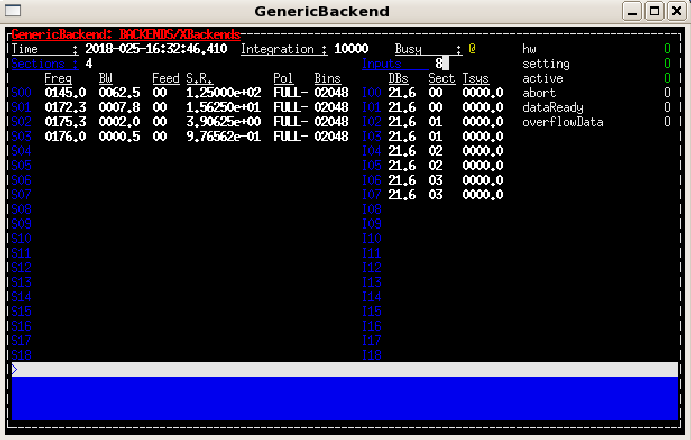Fig.15 A second GenericBackend panel shows the setup parameters of each section of Xarcos.
Primary Control Panel ACU¶

Fig.16 Primary Control Panel ACU.